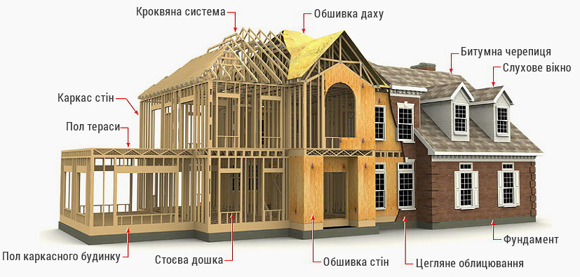
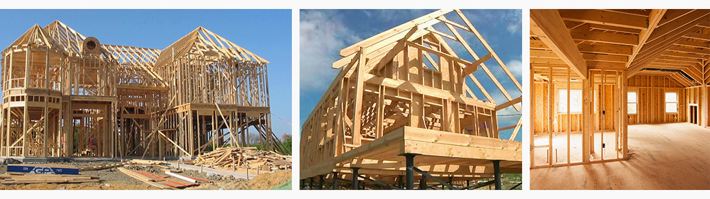

Технологія будівництва каркасного будинку
Технологія будівництва каркасних будинків — одна з найбільш перспективних технологій заміського будівництва. Канадські каркасні будинки користуються популярністю на будівельних ринках більшості розвинених країн світу.
Каркасна технологія дозволяє проектувати і виготовляти каркаси будинків, призначених для постійного проживання в будь-яких кліматичних поясах України.
З чого будується каркасний будинок і його види в залежності від матеріалів?
Поняття «каркасний будинок» варто сприймати буквально. Будівля дійсно буде складатися з внутрішнього каркаса,
який буде оздоблюватись з внутрішньої і зовнішньої сторони спеціальними матеріалами. Для зовнішньої і
внутрішньої обшивки використовуються як листові матеріали (ЦСП, OSB і фанера), так і погонажні (блок-хауз,
вагонка або імітація бруса).
Нутрощі стін наповнюються будь-яким утеплювачем - скловатою, мінеральними
ватою, пінополістиролом або пінопластом. Основне навантаження будівлі розподіляється на каркас, який може бути
як дерев'яним, так і металевим, хоча перший варіант використовується набагато частіше.
- Каркасний будинок монтується безпосередньо на ділянці зі спеціально підібраних штучних будівельних матеріалів. Зведені в відповідність з каркасними технологіями будинки, стійкі до деформацій, мають високу жорсткість і тривалий термін експлуатації.
- Каркасно – панельна технологія (SIP технологія). Принципом цього виду будівництва каркасного будинку є власноручний монтаж матеріалу з подальшою обробкою і утепленням. Тобто, зводячи будинок за даною технологією необхідно окремо купувати кожен матеріал і монтуючи його утеплювати і обробляти.
- Каркасно – щитова технологія. За спеціальним проектом каркасного будинку виготовляються щити необхідного розміру, в які відразу монтується утеплення. Готові елементи конструкції доставляються на ділянку, де за допомогою спеціального обладнання збирається будинок.
Аргументи на користь каркасного будівництва:
- Каркасна технологія вважається самою економічною для зведення індивідуальних будинків;
- Невелика вага будинку допомагає заощадити витрати на фундамент;
- Швидкий монтаж дозволяє ввести будиток в експлуатацію після закінчення декількох місяців;
- Дерев'яні каркасні будови мають високий коефіцієнт енергозбереження та допомагають значно скоротити витрати на опалення. Крім цього в зимових умовах будинок швидко прогрівається, а низька теплопровідність конструкції дозволяє робити стіни товщиною в 15 см;
Виготовлення фундаменту для каркасного будинку
Як відомо, фундамент є основою будови і впливає на термін його служби. Технологія будівництва каркасних будинків передбачає використання трьох видів фундаменту стрічкового, стовпчастого і плиткового. Вибираючи фундамент необхідно приділити увагу двом основним факторам:
- Вазі конструкції;
- Структурі грунту.